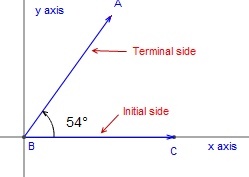

In trigonometry, an angle is drawn in what is called the "standard position". The vertex of the angle is on the origin, and one side of the angle is fixed and drawn along the positive x-axis (at the 3 o'clock position as shown as BC above).

The side that is fixed along the positive x axis (BC) is called the initial side. To make the angle, imagine of a copy of this side being rotated about the origin to create the second side, called the terminal side.The amount we rotate it is called the measure of the angle and is measured in degrees or radians. This measure can be written in a short form:
If it is not ambiguous, we may use just a single letter to denote an angle. In the figure above, we could refer to the angle as ABC or just angle B.
In trigonometry, you will often see Greek letters used to name angles. For example the letter θ (theta), but on this site we always use ordinary letters like A,B,C.
In the figure above click 'reset' and drag the point A around counterclockwise. Once you have made a full circle (360°) keep going and you will see that the angle is greater than 360°. In fact you can go around as many times as you like. The same thing happens when you go clockwise. The negative angle just keeps on increasing. See Trig functions of large and negative angles
If you have one angle of say 30°, another of 390°, the two terminal sides will be in the same place
The measure of an angles can be expressed in degrees or radians, but in trigonometry radians are the most common. See Radians and Degrees. Recall than there are 2π radians in a full circle of 360°, so 1 radian is approximately 57°. In the figure above, click on "radians" to change units.
See also the definition of an angle in plane geometry.